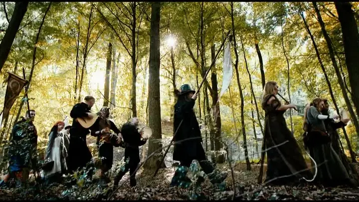

Federkleid
.webp)
Faun, ortaçağ müzikleriyle epey ünlü bir grup ve Federkleid single parçası şahsen en sevdiğim şarkıları. Bu şarkı o kadar güzel bir flüt sesiyle giriş yapıyor ki insanın içini huzurla doldurmaya yeter. Grup, konsepti gereği dekorasyonlarını hep ortaçağ dönemine ait eşyalardan seçiyor. Giydikleri kıyafetler ve klibin çekildiği yerler sizi tarihin o dönemlerine götürüyor. Bu şarkı ise daha çok doğal ortamda söyleniyor. Almanca aslında kaba bir dil olmasına rağmen söz uyumunu ve kafiyeyi o kadar iyi ayarlamışlar ki kulağa çok hoş ve kibar gelen bir yapısı var. Bir kartalın uçuşunu tasvir ederken aynı anda doğanın güzelliklerini de çok huzur verici bir tarzla sunuyor. Eğer siz de benim gibi mistik, tarihi ve aynı zamanda huzur dolu doğa tasvirlerini seviyorsanız bu grubun her şarkısını dinlemenizi öneririm çünkü her biri ayrı güzel fakat ben en sevdiğim şarkılarını şu şekilde sıraladım:

| En çok sediğim |
2. en çok sevdiğim |
3. en çok sevdiğim |
4. en çok sevdiğim |
5. en çok sevdiğim |
| Federkleid |
Tanz mit mir |
Walpurgisnacht |
Diese kalte |
Rosenrot |